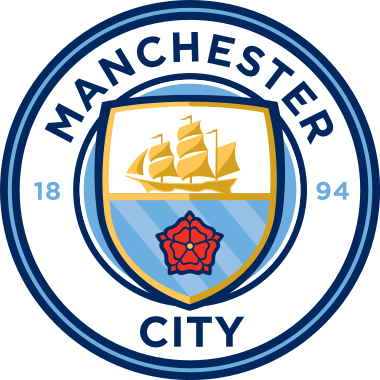

Welkom op een informatieve website over Manchester City FC.
Op deze pagina kan je informatie vinden over de geschiedenis van Manchester City F.C, de trofeeen die ze hebben gewonnen in het bestaan van de club en welke spelers er nu op dit moment spelen.
Manchester City Football Club is een Engelse professionele voetbalclub gevestigd in Manchester die uitkomt in de Premier League, de topklasse van het Engelse voetbal. Opgericht in 1880 als St. Mark's (West Gorton), werden ze Ardwick Association Football Club in 1887 en Manchester City in 1894. De thuisbasis van de club is het City of Manchester Stadium in het oosten van Manchester, waar ze in 2003 naartoe verhuisden, nadat ze hadden gespeeld in Maine Road sinds 1923. Manchester City adopteerde hun hemelsblauwe thuisshirts in 1894, in het eerste seizoen met de huidige naam. In de loop van zijn geschiedenis heeft de club negen landstitels, zeven FA Cups, acht League Cups, zes FA Community Shields, één UEFA Champions League, één European Cup Winners 'Cup en één UEFA Super Cup gewonnen.
De club sloot zich in 1892 aan bij de Football League en won hun eerste grote eer, de FA Cup, in 1904. Manchester City beleefde zijn eerste grote succesperiode eind jaren zestig en begin jaren zeventig, met het winnen van de landstitel, de FA Cup en de League Cup. , en de European Cup Winners Cup onder leiding van Joe Mercer en Malcolm Allison. Na het verlies van de FA Cup-finale van 1981 maakte Manchester City een periode van achteruitgang door, met als hoogtepunt degradatie naar het derde niveau van het Engelse voetbal voor de enige keer in hun geschiedenis in 1998. Sindsdien zijn ze in 2001-2002 weer gepromoveerd naar het hoogste niveau en zijn sinds 2002-2003 een vaste waarde in de Premier League.
Manchester City ontving aanzienlijke financiële investeringen in zowel spelerspersoneel als faciliteiten na de overname door sjeik Mansour bin Zayed Al Nahyan via de Abu Dhabi United Group in augustus 2008. Hiermee begon een nieuw tijdperk van ongekend succes: de club won de FA Cup in 2011 en de Premier League in 2012, beide hun eerste sinds de jaren zestig, gevolgd door een nieuwe landstitel in 2014. Onder leiding van Pep Guardiola won Manchester City. de Premier League in 2018 en werd het enige team in de competitiegeschiedenis dat 100 punten behaalde in één seizoen. In 2018-2019 wonnen ze vier trofeeën, waarmee ze een ongekende reeks van alle binnenlandse titels in Engeland voltooiden en het eerste Engelse herenteam werden dat de binnenlandse treble won. Dit werd gevolgd door drie opeenvolgende Premier League-titels in 2020–21, 2021–22 en 2022–23, de derde, vierde en vijfde in het Guardiola-tijdperk, evenals de allereerste Champions League-finale van de club in 2021, die ze verloren van Chelsea. In het seizoen 2022-2023 won Manchester City hun eerste Europa Cup en voltooide daarbij de continentale treble, een prestatie die slechts één keer eerder werd behaald door een Engels herenteam. De club staat vanaf 2023 op de eerste plaats in het UEFA-coëfficiëntenklassement.
Manchester City stond aan het einde van het seizoen 2021-2022 bovenaan de Deloitte Football Money League, waardoor het de voetbalclub is met de hoogste omzet ter wereld, ongeveer € 731 miljoen. In 2022 schatte Forbes dat de club de zesde meest waardevolle ter wereld was, met een waarde van $ 4,250 miljard. Manchester City is eigendom van City Football Group Limited, een in Groot-Brittannië gevestigde holding met een waarde van £ 3,73 ($ 4,8) miljard in november 2019 en waarvan het merendeel in handen is van de Abu Dhabi United Group.